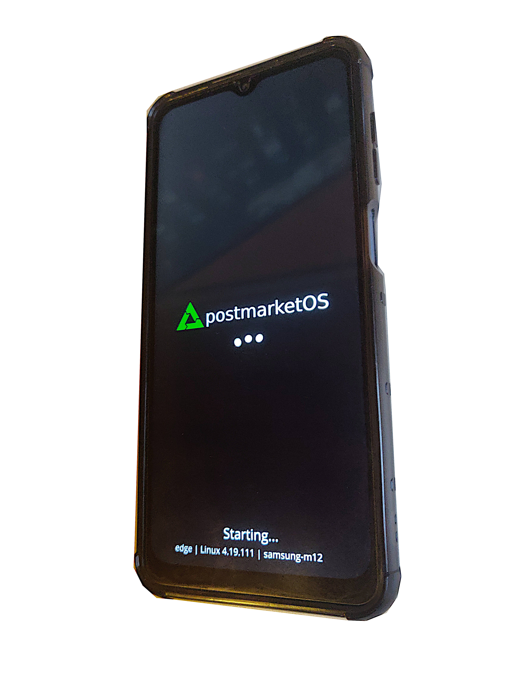

Samsung M12 (samsung-m12)
|
 samsung m12 booting postmarket os | |
| Manufacturer | Samsung |
|---|---|
| Name | M12 |
| Codename | samsung-m12 |
| Model | SM-M127F |
| Released | 2021 |
| Category | testing |
| Pre-built images | no |
| Original software | Android |
| Original version | 11 |
| postmarketOS kernel | 4.19.111 |
| Hardware | |
| Chipset | Samsung Exynos 850 |
| CPU | Octa-core 2.0 GHz Cortex-A55 |
| GPU | Mali G52 |
| Display | 720x1600 PLS LCD |
| Storage | 32GB/64GB/128GB |
| Memory | 3GB/4GB |
| Architecture | AArch64 |
| Type | handset |
{kind=link}
| USB Networking |
Works
|
|---|---|
| Flashing |
Works
|
| Touchscreen |
Works
|
| Display |
Works
|
| WiFi |
Works
|
| FDE | |
| Mainline |
Broken
|
| Battery |
Works
|
| 3D Acceleration |
Partial
|
| Audio |
Partial
|
| Bluetooth |
Broken
|
| Camera |
Broken
|
| GPS |
Broken
|
| Mobile data |
Broken
|
| Internal storage |
Works
|
| SMS |
Broken
|
| Calls |
Broken
|
| USB OTG |
Works
|
| NFC | |
| Accelerometer | |
|---|---|
| Magnetometer | |
| Proximity | |
| Hall Effect | |
| Barometer | |
| Power Sensor | |
| Built-in DVB | |
|---|---|
| Camera Flash |
Works
|
| Stylus | |
| Memory Card |
Works
|
| Haptics |
Works
|
| Ethernet | |
| FOSS bootloader |
Broken
|
Contributors
- Dust417
Users owning this device
How to unlock bootloader
| WARNING: Unlocking the bootloader will wipe all data and may void the warranty |
- Go to Settings > About device and click on Build Number seven times
- Go to Settings > Enable OEM unlocking and turn it on
- Power down the device
- Hold down Volume Down+Volume Up
- Connect device to computer through a USB cable
- Long press Volume Up
- Press it again to confirm it
How to enter flash mode
Power off the device, hold volume up and down together, then connect it to the computer and press volume up to continue.
Installation
Backup your data. The device package and modified pmbootstrap tool has not been merged yet, so it is needed to git clone it from below
git clone https://gitlab.com/Dust417/pmbootstrap.git -b heimdall-dtbo pmbootstrap
mkdir -p ~/.local/var/pmbootstrap/cache_git/
cd pmbootstrap
git clone https://gitlab.com/postmarketOS/pmaports.git ~/.local/var/pmbootstrap/cache_git/pmaports
git clone https://gitlab.com/Dust417/pmaports.git -b samsung-m12 aports
rm -r ~/.local/var/pmbootstrap/cache_git/pmaports/device/testing/
mv aports/device/testing ~/.local/var/pmbootstrap/cache_git/pmaports/device/
from now on you can use python3 pmbootstrap.py <command>
Use pmbootstrap to build your own installation image.
$ pmbootstrap init
If installing to sdcard
$ pmbootstrap install --sdcard=<example /dev/sdf>
| When installing to the internal storage this technique has to be used but instead of installing it in the recovery ramdisk, it has to be installed from the pmos installed on a sd card first |
If installing to the emmc
$ pmbootstrap install
before we start flashing, we must copy the directory with the generated install files because pmbootstrap looks for them at the wrong location for some reason
$ pmbootstrap chroot
# cp -r /mnt/chroot_rootfs_samsung-m12 /mnt/rootfs_samsung-m12/
# exit
| When flashing multiple partitions with heimdall it is possible to hold down Volume Down+Volume Up after the phone finishes flashing and begin flashing again |
$ pmbootstrap flasher flash_vbmeta
$ pmbootstrap flasher flash_kernel
$ pmbootstrap flasher flash_dtbo
Display
| When flashing dtbo the samsung framebuffer driver gets replaced, this makes changing the brightness and turning the backlight on/off not possible |
GPU acceleration
The odroid n2+ has the same gpu and support for linux, so it is possible to download and install the mali g52 proprietary driver (version 37 is the closest to the kernel version) however so far the acceleration has been working only when using ptitsebs gl4es compiled for odroid, the LIBGL_FB environment variable mustn't be set to 0 or it will cause kernel panic.
Audio
Audio is working, but only when using the alsa devices directly, without pulseaudio or pipewire. To enable speaker do
# alsaucm set _verb HiFi set _enadev Speaker
To enable headphones do
# alsaucm set _verb HiFi set _enadev Headphones
To test it
$ speaker-test -t sine -D sysdefault
Other
To enable flashlight
# echo 1 > /sys/class/camera/flash/rear_flash
To enable vibration
# echo <time in miliseconds> > /sys/class/timed_output/vibrator/enable
If using xfce4 this has to be disabled